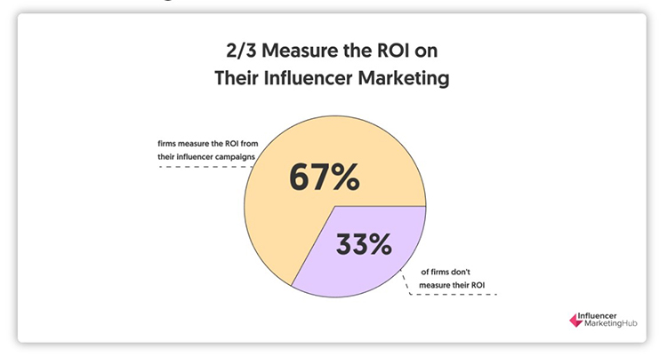

Every new year would mean new marketing goals to any organization, which means having a fresh and clear marketing strategy in place. After all, each organization’s goal is to increase its sales—the more eyeballs and hype, the better the sales potential.
Content is the crucial ingredient that makes the recipe light up. While most would go for content marketing, some are attracted to influencer marketing, a somewhat newer player in town.
What is Content Marketing?
Content marketing is a marketing approach that focuses on creating and distributing relevant, meaningful, and consistent content to attract and maintain your audience. The goal is to motivate profitable customer action.
So, instead of doing a traditional sales-push method for your sales pitch, you are providing the audience with relevant and useful content to help solve their issues.
How Can Content Marketing Help You?
One fact that every marketer knows – content is the present and future of marketing. But, how is it that even though you keep throwing tons of information at your potential clients, you still fail? Chances are, you’re one of many in the same situation where all you’re doing is throwing informational garbage that’s not valuable or relevant to them.
This is where content marketing comes into the picture, as this strategy is all about having effective and relevant content, something that speaks to your audience and piques their interests.
If done right, content marketing can:
Attract Committed and Loyal Clients
Content is an effective medium to answer any queries about your products/services and address your clients’ needs. When you craft credible, meaningful, and authoritative content that helps solve problems or educate a particular niche in a field, people will likely trust you and come back for more.
Informative and engaging content can help build meaningful relationships with your clients. From here, they can quickly turn into loyal advocates of your brand.
Build a Strong and Credible Brand
Quality content speaks volumes, and this helps to boost the company’s brand reputation as it shows that you know what you’re talking about and places you in a leading position. Having customers vouch for you with a testimonial is one of the best tactics for encouraging potential buyers.
This is because consumers would like to know about your products/services before deciding to invest in them. Showcasing good, reliable, and trustworthy reviews can also help build credibility for your brand.
Reduce Marketing Costs
In general, content marketing is relatively inexpensive, and it brings many benefits to companies. Although it does cost you time and effort, you’ll find that the sooner you do so, the faster you’ll see the results you want. It will be worth your investment.
Boost SEO
Having quality content and following SEO best practices can help increase your traffic volume. The better your content is, the more likely you will be able to attract a larger audience. Users can easily find your content when they search, and since you’ve posted relevant information, they’ll keep coming back for more.
The Cons of Using Content Marketing
If you solely bank all your marketing efforts on content alone, there are some cautions to note:
Harder to Implement
More and more entry barriers make it harder to insert your brand’s content into external platforms. As such, more marketers are finding it difficult to be successful in strategies such as off-site SEO.
Could be Costly & Take Time
Although I mentioned above that content marketing is generally inexpensive, there are times that it can be costly. Content relies much on its authenticity. If you’re going to write about something, you have to make sure it’s authentic and accurate; ingredients for quality content.
If you are unfamiliar with a particular niche, you need more time to research or consider engaging expert content producers specializing in the niche. The latter could cost you more, but potentially reduce cost and improve your credibility in the long run.
Ensure Consistency
As time goes by, there’s this tendency for marketers to focus on only wanting to get the content out there; anything will do. Then it becomes the continuous publishing of neverending content streams with no consistency. Many make this common mistake. Bear in mind that it’s not only the content delivery that matters but also the overall quality.
Also, note that delivering content at the right time also makes a difference, so make sure you keep track of the data that fits your audience demographics.
What is Influencer Marketing?
The concept of influencer marketing leverages the reach of an existing influencer who has already built a large following and a strong reputation in a particular niche. This helps support your brand and endorse your product/services to increase your brand awareness and drive sales.
Despite initial concerns that influencer marketing may take a nosedive due to Covid-19, it has increased in reality. After all, people now spend considerably more time online than previously, so in a way, Covid-19 helped accelerate influencer marketing growth in 2020, and this is estimated to continue in 2021.
It is a known fact that customers would trust recommendations from a third party rather than you as the brand itself. As such, influencers can be a third party that will help spread the word about your product or service. Of course, you’ll need to identify your target audience to better define your influencers.
In short, your brand needs to be communicated and promoted by the right personality who is familiar with your industry, has the right authority surrounding your brand, and then builds the right content among your community.
Influencer marketing needs to be dynamic and, if done right can:
Increase Awareness in Your Brand
Influencers have a high proportion of engagement since most have ardent followers. They can do this without the need to use sales or advertising pitches in such interactions overly. The goal is more of striking a friendly conversation, not just focusing on conversions alone.
Influencers already have a strong backing of followers, to begin with. They trust the suggestions and viewpoint of the influencer, so whatever the influencer shares, chances are, it will be good, and they’ll trust as well.
You can leverage this and increase your brand’s authority by boosting its perception when the influencers’ followers engage with your branded influencer’s content.
The key to making successful influencer marketing is collaborating with the relevant and right influencers. Basically, people who are having the same niche as yours, having a group of real followers, and posting genuine content.
Increase Brand Reach
You can capture new markets, which you may find difficult to tap into in the first place. Did you know that most people look for reviews and recommendations before they decide to purchase? Social channels are often their go-to resources.
Remember to put extra consideration into your engagement with each influencer since they often have varying characteristics. By doing so, the chances of your brand gaining greater exposure will increase.
Solidifies Customers’ Trust
An influencer can produce entrancing content that surrounds your brand or product if he/she trusts your brand or product. As such, their followers, upon coming across this content, would likely believe it and, therefore, your brand as well.
To do so, you’ll need to convince the influencers that your service/product is worth promoting on social media. Invite them to experience your product/service personally. Of course, you’ll need to explain what constitutes your unique selling proposition or value proposition.
Whatever that the influencers say becomes authentic and genuine reviews as they have personally tried them out. Influencers sell experiences, and since these are real and authentic, customers can relate to them quickly and trust their recommendations.
Influencers Know Their Audience
Since influencers dedicate their time to posting and chatting with their audiences, they would have formed a ‘personal relationship with them. Therefore they can maneuver and catch the attention of their niche faster and easier. Additionally, influencers understand the market better. As such, they could help you structure your general strategy and the content too.
Increases Search Potential
Influencers have a high Domain Authority (DA). Moving to engage key influencers is useful, especially when they link and mention you in their social media content. Many influencers will be able to pass on a good quantity of link power, helping you to get traffic and quality backlinks that can help with your SEO effort.
Boosts Return of Investment (ROI)

67% of the respondents measure the ROI from their influencer campaigns (Source: Influencer Marketing Hub)
Many believe that they can improve their earnings manifold via leveraging influencer marketing. That is why around 67% of companies measure their ROI from such campaigns. It really pays off.
The Cons of Using Influencer Marketing
Influencer marketing isn’t perfect though and there are areas you need to consider carefully. Some of these include;
The Stigma of Blind Loyalty
Although I did mention that followers trust their ‘idols’ and will ‘follow’ them implicitly, things have changed as most hold any product or service to higher scrutiny. So, this means that there is a fair segment that won’t be affected by what can be perceived as blind loyalty.
The audience may measure your brand against the yardstick they have for the influencer. Therefore, you’ll have your work cut out for you to ensure everything is done right and all relevant information gets across properly and accurately.
Unrealistic Expectations in Engagement
A massive number of followers can usually denote credibility and reliability, but this may not always be the case. There are many unpredictable forces in play as an influencer’s popularity heavily depends on the many different expectations and characters of these followers.
Therefore, it is pertinent to drive meaningful engagement and build relationships tactfully and continuously with followers to ensure loyalty.
Higher Costs Involved
Engaging an influencer is not cheap. This is confirmed by businesses that have jumped on the influencer marketing trend. Many have spent billions of dollars on just the Instagram platform. So, you may want to look at cheaper options. There is an even larger pool of influences with smaller audiences that can be interesting to consider.
Content Marketing vs. Influencer Marketing
Even though they’re different, as you can see above, their goals remain essentially the same. Both are viable strategies and can complement one another. It doesn’t have to be one strategy or the other, as influencer marketing can be a solid addition to your overall content strategy if done right.
So, it’s not so much of pitting content against influencer marketing; it is more of how they can work together and complement one another to create that needed ripple effect, enhancing your brand awareness, reach, and visibility, which in turn, can boost sales, leads generation, trust, and credibility.
Which is For You?
There are close to 4.9 billion internet users globally, which is more than 60% of the global population. This is, no doubt, a huge market you can tap into. Many have registered great success by building a foundation of content first and then amplify it with influencer marketing. In short, influencer marketing complements content marketing.
Content should always be your baseline. Once you’ve created that solid content base, influencers can help generate quick and solid wins. Whatever it is, influencer marketing needs content to thrive. If you don’t have the right content, how can an influencer successfully promote your brand, products, or services?
Getting the right persona that fits your brand is the start of a successful campaign. Next, keep your content up to date and maintain the right tone and messaging consistently. Being able to access influences of various levels on different platforms is important.
Conclusion
As you can see, influencer marketing and content marketing are quite the same. They don’t differ much fundamentally. They go hand in hand. Good and quality content is the key to success in any marketing initiative.
It takes a very holistic approach to drive effective branding and the voice of influencers does help. Influencers have a ready-made audience and can quickly boost your brand by several notches. Both powerful strategies and if used correctly can churn unbelievable results.
About the Author
Jason is the outreach manager and digital marketer from WebRevenue.io, a company that provides digital marketing for startups and online businesses. Jason loves to blog about his experience in web marketing.
Leave a Reply